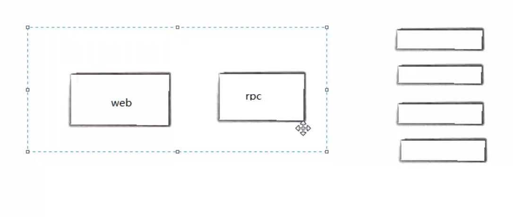

环境搭建和调试工具
- dlv调式 //TODO
- 基于CSP模型实现
- 通过创建物理线程，在物理线程中调度携程
channel
- 管道
- 多个goroute通过channel进行通信
- 支持多个类型
- 包内变量全局可访问，大小写控制 //TODO
- 管道满了会阻塞
var pipe chan int
pipe = make(chan int, 3)
pipe := make(chan int, 3)
包的概念
- 不用考虑编码
- 函数名要大写才能被其他包引用
- go build -o ../../bin/main main.go 编译输出到指定路径
自动运行
- 每个源代码文件都可以包含init函数，这个init函数自动被go运行框架调用
- 先初始化全局变量-->init函数-->main
- 不使用只初始化
常量
- const c = getValue() 错误
- const 只能修辞boolean, number(int相关类型,浮点型)和string
值类型和引用类型
- 值类型 变量直接存储值，内存在栈中分配
- 引用类型 变量存储的是一个地址，内存在堆上分配
- 值类型 int, float, bool, string,数据和 struct
- 引用类型 指针, slice, map, chan 都是引用类型
- go语言栈只有几k
- 堆内存分配没有栈性能高
- 堆分配算法//TODO
变量周期
- 大写的变量局部变量模块结束，变量也就释放了
- 全局区域:=不能通过，只能声明,不能执行代码
随机数
- 应用场景
- 
- rpc和web节点绑定在一起
- rpc调用库实现负载均衡和健康检查
字符串类型
- 双引号
- 反引号 `` 中间的内容不做任何转换，可以任意换行
- %v打印原来的类型
- %T 打印Go语言语法类型
- len的时间复杂度是O(1)长度储存的